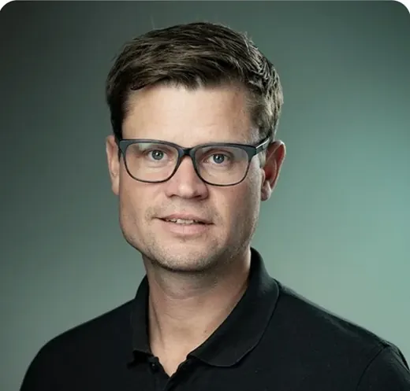

Kontakt
En direkt väg
till GEMAC.
För frågor om GEMAC och bolagets verksamhet är Erik Göransson kontaktperson.

GEMAC AB
Erik Göransson
Ägare
E-postErik Göransson
OrtTranås, Sverige
Klicka på namnet för att skriva ett mejl.
Kontakt
För frågor om GEMAC och bolagets verksamhet är Erik Göransson kontaktperson.

GEMAC AB
Ägare
Klicka på namnet för att skriva ett mejl.